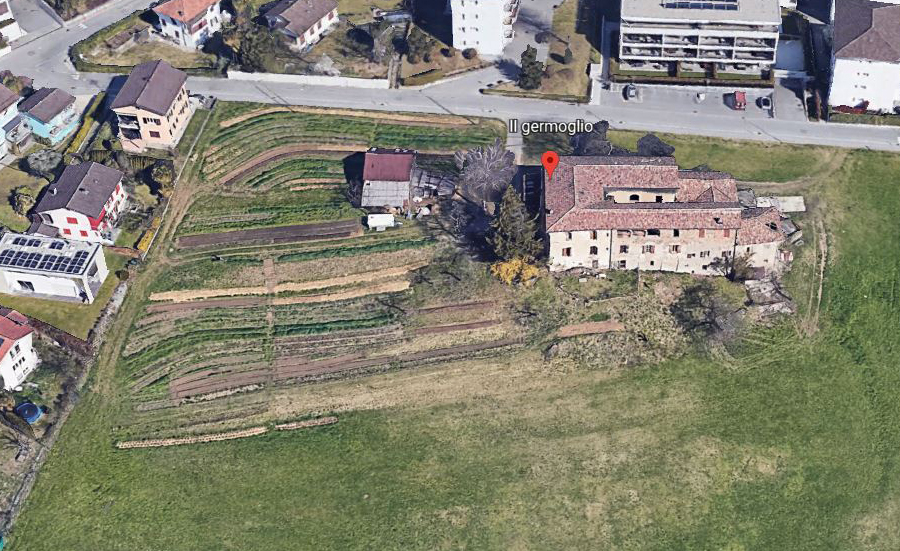

Associazione CSA Germoglio
Seguici!


Agricoltura partecipativa
CSA - Comunità che Sostiene l’Agricoltura - è un partenariato tra agricoltore e consumatore in cui
responsabilità,
lavoro e raccolto sono condivise.
Ogni socio contribuisce alla produzione agricola partecipando ai lavori
e
versando
una parte dei costi agricoli annui.
In questo modello partecipativo è di fondamentale importanza il
rapporto
di
fiducia che si instaura tra socio e contadino coltivatore.
CSA Germoglio riceve:
- ortaggi biologici di stagione e libertà di autogestione della sovrapproduzione
- prodotti più saporiti e nutrienti
- libertà di scelta delle colture
- accesso libero all’orto e la libertà di organizzare eventi sociali tra i sostenitori
- agevolazioni sui corsi nell’ambito agricolo proposti dal contadino
CSA riceve anche dei vantaggi non quantificabili:
- sviluppo delle competenze grazie alle istruzioni di orticoltura offerte liberamente dall’agricoltore Daniel Graf.
- l’orgoglio della responsabilità diretta per l’orto.
- la gioia di creare qualcosa assieme condividendo le stesse passioni.
- la soddisfazione nel trovare un’alternativa resiliente all’agricoltura industrializzata.
- la riconnessione tra comunità urbane e rurali.
L’agricoltore
Con il modello economico dell’agricoltura collettiva e sostenibile CSA Germoglio, gli agricoltori ottengono
un
reddito equo e stabile mentre i consumatori ricevono prodotti freschi e sani a prezzi accessibili.
Il
totale
dei
costi di manodopera e materiali sono suddivisi e coperti dalle quote di partecipazione dei sostenitori in modo
equo,
per unità famigliare che può variare di grandezza.
Con un contributo unico annuale di Chf 1440.- e 5
giorni
di
lavoro all’anno accanto al contadino-produttore, la sostenibilità economica viene raggiunta con almeno 20 soci
CSA.
Le categorie di soci (unità che possono anche essere divise a metà tra due famiglie) vengono offerte a seconda della disponibilità, cercando di mantenere all’interno del gruppo CSA una media di 5 giorni di lavoro:
- 7 giornate → Chf 1140.- all’anno
- 6 giornate → Chf 1320.- all’anno
- 5 giornate → Chf 1440.- all’anno
- 4 giornate → Chf 1596.- all’anno
- 3 giornate → Chf 1740.- all’anno
L’Associazione CSA Germoglio copre:
- la mano d’opera del contadino produttore; l’affitto dei macchinari e del terreno; il costo delle piantine e sementi; il consumo d’acqua ed elettricità
Il modello economico CSA offre vantaggi durevoli:
- riduzione dell'impatto ambientale dell'agricoltura; la CSA sostiene pratiche agricole rigenerative che ripristinano e rispettano l'ambiente naturale, migliorano la fertilità del suolo e riducono l'erosione, proteggono i corsi d'acqua, riducono il consumo di carburante e l'inquinamento nel trasporto alimentare.
- riduzione degli sprechi; la CSA accetta i prodotti con imperfezioni e preferisce gli imballaggi riutilizzabili.
- riduzione del consumo di energia; la CSA elimina la necessità di stoccaggio a lungo termine e il trasporto a lunga distanza.
- indipendenza dalle fluttuazioni dei prezzi di mercato.
- rivalutazione della professione del contadino tramite diretto sostegno di salari equi e buone condizioni di lavoro.
Agricoltura rigenerativa con trattore elettrico
Il nostro progetto agricolo si basa sui tre principi etici e progettuali della permacultura: cura per la terra, cura per le persone, equa condivisione.
Il nostro progetto cura la terra riconoscendo e rispettando l’equilibrio naturale dei microorganismi. Applichiamo le consociazioni rafforzanti delle piante, mettiamo a disposizione il fabbisogno naturale di sostanze nutritive e creiamo un habitat per insetti, rettili, rane, rospi, ricci e uccelli che tramite il loro instancabile contributo curativo mantengono l’equilibrio biologico dei parassiti. Così diamo l’opportunità al mondo vegetale di crescere vigorosamente ed in salute. Effettuiamo una lavorazione del terreno solo se necessaria, delicata e superficiale. È importante per noi utilizzare con parsimonia le risorse, per questo applichiamo la pacciamatura di fieno per tutte le colture.
Il progetto agricolo ha anche uno scopo terapeutico-riabilitativo. Il benessere della comunità viene rafforzato accogliendo nell’orto dei volontari di età, abilità e competenze complementari. Creiamo orti didattici con le scuole e giardini sensoriali per i più piccoli, nonché l’integrazione nell’orto di spazi d’incontro per la convivialità. Il lavoro collettivo ha effetti benefici sulla coesione sociale e accresce la fiducia nel prossimo, si manifesta una migliore connessione emotiva e riduce la solitudine percepita. Le persone si sentono più coinvolte all’interno della propria comunità, sviluppando empatia e solidarietà.
La sostenibilità economica a lungo termine di questo piccolo progetto agricolo ruota attorno al principio dell’equa condivisione. Il modello agricolo partecipativo, CSA (Comunità che Sostiene l’Agricoltura), è un partenariato di impegno reciproco tra il contadino coltivatore e una comunità di sostenitori. Non sono più i prodotti ad avere un prezzo, vengono bensì coperti i costi di mano d’opera e dei materiali necessari per la coltivazione. In cambio vengono condivisi i prodotti freschi di stagione. L’Associazione CSA Germoglio si impegna a sostenere l'agricoltore durante tutta la stagione di coltivazione: effettua pagamenti anticipati e partecipa ai lavori. Gli aspetti caratteristici della CSA sono la condivisione dei rischi economici in caso di danneggiamenti delle colture, e d’altro canto la condivisione dei benefici di un raccolto abbondante con prodotti di alta qualità.